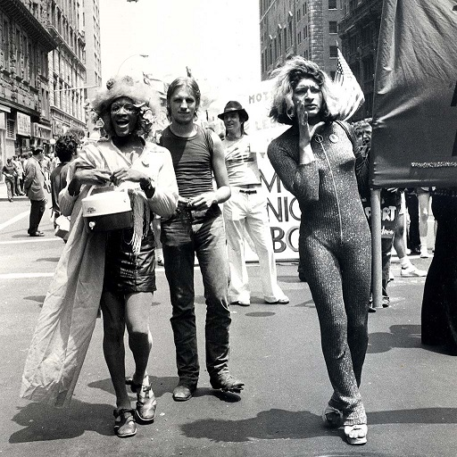

SpotLight
Home The Agenda SpotLight My PlaylistWho you gotta know?
B T S

Watch BTS's newest music video for their song Butter
What you gotta know?
History of Pride Month
Courtesy LGBT Community Center National History Archive
Click below for some history about how Pride Month began and activitist Marsha P. Johnson
How Pride Month Got Its Origins Marsha P. Johnson